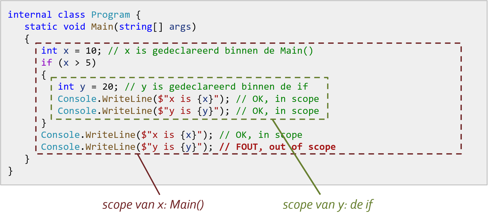

Op Youtube
Deze video maakt deel uit van de IIP playlist van de Youtube channel van Rogier van der Linde.
Let op: deze video's zijn al een paar jaar oud, dus hier en daar kunnen kleine afwijkingen voorkomen met deze cursus, die wel altijd up-to-date is.

Commentaar
Met commentaar voeg je extra informatie toe aan je code. Commentaar is vrije tekst die niet uitgevoerd wordt.
Commentaar op één regel
// Eerste regel
// Tweede regel
Commentaar over meerdere regels
/* Eerste regel
Tweede regel */
Vuistregels voor goede commentaar
Enkele tips/vuistregels voor een zo leesbare commentaar:
- voeg commentaar pas toe als je programma zo goed als af is, zo vermijd je nodeloos werk
- grote blokken als methodes voorzie je bovenaan van een commentaarblok
- verdeel de coderegels in stukken van telkens een paar regels, en zet bovenaan elk stuk commentaar in één regel (sla niks over)
- scheid stukken telkens met één blanco regel
/// <summary>
/// Theorie hoofdstuk 03 – commentaar voorbeeld
/// Auteur: Rogier van der Linde
/// </summary>
static void Main(string[] args)
{
// waarde inlezen
Console.Write("Geef een geheel getal: ");
string antwoord = Console.ReadLine();
// ingelezen waarde is een string; converteer het naar een double
double getal1 = Convert.ToInt32(antwoord);
// resultaat teruggeven
Console.WriteLine($"Het kwadraat is: {getal1 * getal1}");
Console.ReadLine();
}
Variabelen en constanten
Een variabele is een naam die een waarde van een bepaald type kan bevatten. Het vermelden van het bestaan van een variabele met type en naam noemt men declaratie, het geven van een eerste waarde initialisatie.
Declaratie
Een declaratie is een nieuwe variabele aanmaken met een naam.
string halloTekst; // tekst
int leeftijd; // geheel getal
float leeftijd; // kommagetal
char teken; // karakter
bool isCorrectAntwoord; // ja of nee
→ stijlregel: we noteren de naam in camelCaseNotatie
Initialisatie
De initialisatie betekent een variabele zijn initiële (eerste) waarde geven:
string halloTekst;
halloTekst = "Hallo Wereld!"; // variabele later geïnitialiseerd
Of declaratie en initialisatie in één keer:
string halloTekst = "Hallo Wereld!"; // variabele meteen geïnitialiseerd
Toewijzing
Je mag een variabele altijd een andere, nieuwe waarde geven – het is tenslotte "variabel". Het toekennen van een waarde heet een toekenning of toewijzing
string halloTekst = "Hallo Wereld!"; // declaratie en initialisatie
halloTekst = "Hallo Iedereen!"; // toewijzing: variabele krijgt (nieuwe) waardeOverzicht datatypes
Het datatype beperkt welke waarden de variabele kan bevatten. Types gebruikt in deze cursus:
| Datatype | Omschrijving | Voorbeeld |
|---|---|---|
int * |
gehele getallen (32 bits, pos/neg, max. 2.147.483.647) | int age = 25; |
long |
gehele getallen (64 bits, pos/neg, max. 9.223.372.036.854.775.807) | long wait = 42L; |
float |
kommagetallen (6-7 tekens) (pos/neg) | float price = 2.95F; |
double * |
kommagetallen (15-16 tekens) (pos/neg) | double area = 12.3; |
decimal |
voor geldbedragen, hogere precisie (28-29 tekens) | decimal price = 12.99M; |
string * |
tekenreeks (tekst) | string auto = "Honda"; |
char * |
één teken (letter, cijfer, leesteken, ...) | char geslacht = 'V'; |
bool * |
booleaanse waarde: waar/onwaar (true/false) | bool gevonden = false; |
Constanten
Een constante is als een variabele, maar het moet een vaste waarde hebben en die
waarde kan
niet meer veranderen. Een constante duid je aan met const:
const int MaxAantalPogingen = 3;
const string Prefix = "ABC_";
→ stijlregel: de meest gangbare notatie voor constanten in C# is PascalCaseNotatie
Constanten kunnen na initialisatie niet meer toegewezen worden. Dit is dus fout:
MaxAantalPogingen = 4; // FOUT! waarde kan niet meer veranderen
const string Suffix; // FOUT! constante moet een waarde hebben
const string Name = Console.ReadLine(); // FOUT! constante moet vaste waarde hebben
De regels zijn niet altijd duidelijk. Maar geen nood ‐ Visual Studio zal je wel op fouten wijzen.
Naamgeving
De naam van een variabele moet voldoen aan de volgende syntaxregels:
- bevat enkel letters, cijfers en underscore
- begint niet met een cijfer
- maximum lengte: afhankelijk van de compiler; de C# Roslyn compiler accepteert maximaal zo'n 511 tekens
- geen gereserveerde woorden, dus geen if, class, double, ... (complete lijst https://docs.microsoft.com/en-us/dotnet/csharp/language-reference/keywords/)
Daarnaast houden we ons aan deze bijkomende stijlregels:
- camelCase-notatie voor variabelen (
mijnVariabeleWaarde, nietmijn_variabele_waarde) - PascalCase-notatie voor constanten (
MijnConstanteWaarde, nietmijn_constante_waardeofmijnConstanteWaarde) - betekenisvolle namen
- één taal (Engels/Nederlands), wees consistent!
Er bestaan andere voorkeuren voor deze stijlregels, maar deze regels zijn de meest gangbare in C# en aanbevolen door Microsoft
Nullable types
Nullable types zijn primitieve types int, float, bool… uitgebreid met de null waarde:
int getal1; // alle waarden tussen -2,147,483,648 en 2,147,483,647
int? getal2; // nullable int alle waarden tussen -2,147,483,648 en 2,147,483,647 of null
bool test1 // true of false
bool? test2; // nullable boolean: true, false of null
Je kan ze ook gebruiken in structuren als arrays:
int?[] getallen = new int?[5]; // array van 5 nullable ints
- nullable types zijn handig als je een bepaald primitief type wil gebruiken, maar niet zeker bent of het een waarde zal hebben (bv. antwoorden op een quiz)
Scope
De scope is het bereik waarbinnen een variabele beschikbaar is. Het is heel eenvoudig: een variabele bestaat enkel binnen de accolades waar het gedeclareerd is.
Console voorbeeld
In volgend voorbeeld is x gedefinieerd in Main() en in dat hele blok beschibaar,
terwijl y gedefinieerd is in de if() en dus enkel daar beschikbaar, waardoor de
laatste regel een foutmelding zou geven:

WPF voorbeeld
Nemen we als voorbeeld een eenvoudige paardenrace:

De XAML code:
<TextBlock x:Name="txtStandings" Padding="5" Background="#FFF9F7EC" TextWrapping="Wrap".../>
<Button x:Name="btnRun" Content="RUN!" Click="btnRun_Click" .../>Code behind:

Merk op hoe geen verwarring kan bestaan tussen de twee variabelen met dezelfde naam
“txt”, aangezien hun scopes niet overlappen.
Scope zo klein mogelijk, declaratie zo laat mogelijk
Zoals de titel zegt: hou je scope zo klein mogelijk, en doe de declaratie zo laat mogelijk, zodat ze zo dicht mogelijk staan waar ze gebruikt worden. Dit maakt je code leesbaarder en minder foutgevoelig. Twee fragmenten vergeleken:
// variabelen bovenaan
string answer;
const int MaxGetal = 10;
Random rnd = new Random();
int number, guess;
Console.Write("Wil je een raadspel spelen (j/n)? ");
answer = Console.ReadLine();
if (answer == "j")
{
number = rnd.Next(1, MaxGetal + 1);
Console.Write($"Kies een getal tussen 1 en {MaxGetal}: ");
guess = Convert.ToInt32(Console.ReadLine());
Console.WriteLine(guess == number ? "geraden!" : "jammer");
}
// variabelen lokaal
Console.Write("Wil je een raadspel spelen (j/n)? ");
string answer = Console.ReadLine();
if (answer == "j")
{
const int MaxGetal = 10;
Random rnd = new Random();
int number = rnd.Next(1, MaxGetal + 1);
Console.Write($"Kies een getal tussen 1 en {MaxGetal}: ");
int guess = Convert.ToInt32(Console.ReadLine());
Console.WriteLine(guess == number ? "geraden!" : "jammer");
}
Conversie/parsing
Het omzetten van een waarde van één type naar een ander noemt men conversie;
het specifieke geval waarin je een string omzet heet parsing.
verbredend vs. vernauwend
Er zijn twee soorten conversies:
- verbredende conversie: van een kleiner naar een groter bereik, b.v. van een
double(kommagetal) naar eenstring(tekst) - vernauwende conversie: van een groter naar een kleiner bereik, b. van een
double(kommagetal) naar eenint(geheel getal)
impliciete conversie
Verbredende conversies gebeuren vaak automatisch of impliciet:
int int1 = 13;
double dbl1 = int1; // OK: int impliciet geconverteerd naar double
string str1 = "het kommagetal is " + dbl1; // OK: double impliciet geconverteerd naar een string
string str2 = $"het geheel getal is {int1}"; // OK: impliciete conversie van int naar string tijdens interpolatie
...maar niet altijd:
string str1 = int1; // FOUT! hier treedt geen impliciete conversie opDe logica wanneer wel en niet impliciete conversie optreedt is niet altijd even duidelijk. Maar geen nood, Visual Studio zal je er wel op wijzen als een conversie ontbreekt.
expliciete (handmatige) conversie
Bij expliciete conversie forceer je handmatig de omzetting naar een ander type
ToString()
Conversie naar een string is eenvoudig: je kan altijd overal ToString() gebruiken
int int1 = 13;
string str1 = int1.ToString();
Convert klasse
Er zijn veel manieren om conversies door te voeren. De makkelijkste is met de methodes van de Convert klasse (zie 02. NET classes - Convert):
string str1 = "13"; string str2 = "13.45";
int int1 = Convert.ToInt32(str1);
double dbl1 = Convert.ToDouble(str2);Parse(), TryParse()...
Er bestaan nog andere manieren om te converteren; voorbeelden:
string str1 = "13"; double dbl1 = 13.45;
int int1 = int.Parse(str1); // conversie met ...Parse() methode
int int2; bool success = int.TryParse(str1, out int2); // conversie met de ....TryParse() methode
int int3 = (int)dbl1; // conversie met (int)
string str2 = int1 + ""; // geforceerde conversie
Om het overzichtelijk te houden, raden we deze methodes af. Beperk je tot ToString() en
Convert.To...()
Rekenkundige Operatoren
Dit zijn de klassieke bewerkingen die je uit de wiskunde kent: optellen, aftrekken...
Overzicht
| Operator | Beschrijving | Voorbeeld |
|---|---|---|
+ |
optellen | int som = 5 + 3; |
− |
aftrekken | int verschil = 5 − 3; |
* |
vermenigvuldigen | int product = 5 * 3; |
/ |
delen | int quotient = 5 / 3; |
% |
modulo (rest na deling) | int rest = 5 % 3; |
Gehele deling
Als de twee getallen geheel zijn, wordt de deling geheel uitgevoerd:
int a = 13;
double b = a / 5; // resultaat is 2: gehele deling!
double c = Convert.ToDouble(a) / 5; // resultaat is 2.6
double d = a / Convert.ToDouble(5); // resultaat is 2.6
double e = a / 5.0; // resultaat is 2.6
double f = a * 2 / 5; // resultaat is 26 / 5, of 5: gehele deling!
double g = a * 2.0 / 5; // resultaat is 26.0 / 5, of 5.2
Verkorte Notaties
| Operator | Beschrijving | Voorbeeld |
|---|---|---|
++ |
increment | int getal = 3;getal++; // getal: 4 |
−− |
decrement | int getal = 3;getal−−; // getal: 2 |
+= n |
n bijtellen | int getal = 6;getal += 3; // getal: 9 |
−= n |
n aftrekken | int getal = 3;getal −= 10; // getal: −7 |
*= n |
vermenigvuldigen met n | int getal = 3;getal *= 5; // getal: 15 |
/= n |
delen door n | double getal = 3;getal /= 2; // getal: 1.5 |
Math-klasse
Voor bewerkingen als Round(), Max() enz... en constanten als PI zie 02. NET classes - Math
Strings
Een string is een datatype dat een reeks van karakters (letters, cijfers, ...) kan bevatten. String's worden altijd tussen dubbele quotes geplaatst.
string boodschap = "Hello, World!";
Console.WriteLine(boodschap);Hello, World!
Karakters escapen
De volgende karakters moeten ge-escaped worden d.m.v. een backslash (\):
- dubbele quote (
") - backslash (
\)
Console.WriteLine("Simon says: \"jump\"");
Console.WriteLine("C:\\users\\john.doe\\documents");Simon says: "jump" C:\users\john.doe\documents
Concatenatie
Om meerdere strings samen te voegen tot één string (concatenatie), maak je gebruik van de
+-operator:
// voorbeeld 1
string begroeting = "Hallo, ";
string naam = "John";
string boodschap = begroeting + naam;
Console.WriteLine(boodschap);
// voorbeeld 2
Console.WriteLine($"Mijn naam is: {naam}");Hallo, John Mijn naam is: John
Newlines
Je kunt op twee manieren het begin van een nieuwe regel markeren:
- met behulp van het
\n-karakter - met
Environment.NewLine(aanbevolen)
Console.WriteLine("Regel 1\nRegel 2"); // optie 1
Console.WriteLine($"Regel 1{Environment.NewLine}Regel 2"); // optie 2Regel 1 Regel 2 Regel 1 Regel 2
De notatie met Environment.NewLine krijgt de voorkeur, omdat op sommige besturingssystemen
\r\n verwacht wordt in plaats van \n.
Multiline strings
Om een string over meerdere regels te spreiden, kan je gebruik maken van multiline strings. Om een
multiline string te maken, zet je een @-karakter vóór de openings-quote:
Console.WriteLine(@"Regel 1
Regel 2
Regel 3");
Regel 1 Regel 2 Regel 3
Multiline strings hebben aparte regels voor escapes: \-karakters hoef niet te
escapen, en een dubbele quote (") moet je verdubbelen:
Console.WriteLine(@"C:\users\john.doe\documents"); // backslash NIET escapen
Console.WriteLine(@"Simon says: ""jump!"""); // quotes verdubbelenAls je dat allemaal wat veel vindt om te onthouden, vermijd dan multiline strings als je karakters moet escapen.
String interpolatie
Via string-interpolatie kan je eenvoudig strings samenstellen. Dit kan op twee verschillende manieren:
string naam = "John";
int leeftijd = 35;
Console.WriteLine("Mijn naam is " + naam + ", ik ben " + leeftijd + " jaar oud."); // zonder interpolatie
Console.WriteLine("Mijn naam is {0}, ik ben {1} jaar oud.", naam, leeftijd); // interpolatie met parameters
Console.WriteLine($"Mijn naam is {naam}, ik ben {leeftijd} jaar oud."); // interpolatie met $ → gebruik bij voorkeur deze notatieMijn naam is John, ik ben 35 jaar oud. Mijn naam is John, ik ben 35 jaar oud. Mijn naam is John, ik ben 35 jaar oud.
Je kan niet alleen variabelen, maar ook expressies interpoleren, b.v.:
int getal = 17;
Console.WriteLine($"Het getal {getal} is {(getal % 2 == 0 ? "even" : "oneven")}."); // let op: expressie moet tussen haakjes () staanHet getal 17 is oneven.
Je kan $ interpolatie tenslotte combineren met @ multiline:
string name = "Bozo";
int year = 2024;
string header = $@"******************************
** {name} for president in {year}
******************************";
Console.WriteLine(header);
****************************** ** Bozo for president in 2024 ******************************
Format specifiers
Het formaat waarin strings weergegeven worden kan ingesteld worden met zgn. format specifiers. De belangrijkste opties:
| Specifier | Betekenis | Voorbeeld |
|---|---|---|
- |
standaardweergave | 12,3456789 |
C |
“currency”, weergave als bedrag | € 12,34 |
F1 |
“fixed”, één cijfer na de komma | 12,3 |
F2 |
twee cijfers na de komma | 12,34 |
P |
weergave als percentage met 2 cijfers na de komma | 1.234,57% |
Je kan ze gebruiken als argument in ToString():
double getal = 12.3456789;
Console.WriteLine($"één cijfer na de komma: {getal.ToString("F1")}");
Console.WriteLine($"twee cijfers na de komma: {getal.ToString("F2")}");
Console.WriteLine($"als percentage (x100): {getal.ToString("P")}");
Console.WriteLine($"als bedrag: {getal.ToString("C")}");
Ook rechtstreeks in string interpolatie kan:
double getal = 12.3456789;
Console.WriteLine($"één cijfer na de komma: {getal:F1}");
Console.WriteLine($"twee cijfers na de komma: {getal:F2}");
Console.WriteLine($"als percentage (x100): {getal:P}");
Console.WriteLine($"als bedrag: {getal:C}");
één cijfer na de komma: 12,3 twee cijfers na de komma: 12,35 als percentage (x100): 1.234,50% als bedrag: € 12,35
Format specifiers kom je ook tegen bij datums en tijden.
Properties en methodes
.NET biedt een aantal extra properties en methodes die je kan gebruiken op strings via de String
wrapper class, zie 02. .NET classes - String klasse